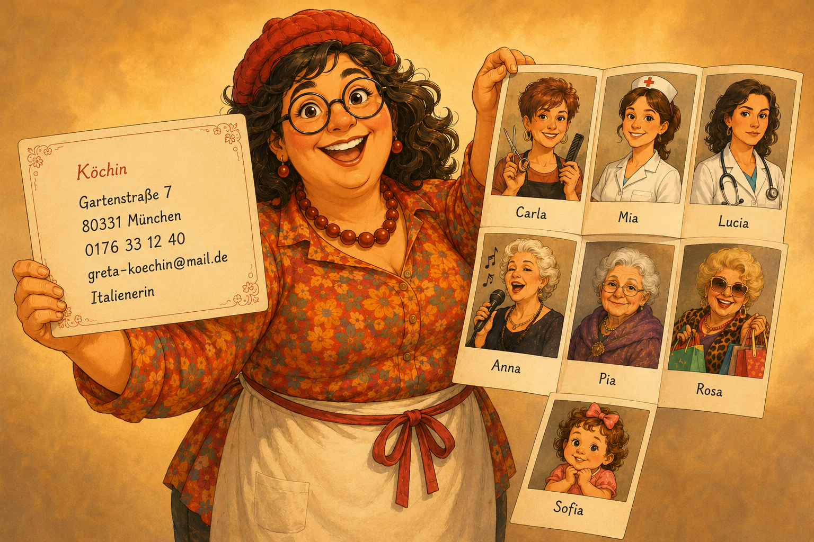

die Грета, её семья и анкета
Темпераментная итальянка Грета знакомит со своей анкетой и семьёй — всё женского рода. Тапни плашку, чтобы открыть немецкое слово (например, у телефона — die Telefonnummer). Ниже — слова, текст, вопросы и упражнения. ← Otto (der)
Изучение
🖼 Грета: анкета и семья
У каждого поля анкеты и у каждой родственницы скрыто немецкое слово (die …). Тапни плашку — откроется слово и артикль.

🔤 Слова сцены die
📜 Текст
Guten Tag, guten Tag! Ich heiße Greta — Mamma mia, endlich lernt ihr mich kennen! Ich bin Italienerin: Ich komme aus Italien, aus Napoli. Aber jetzt wohne ich in Deutschland, in München. Von Beruf bin ich Köchin. Ich habe eine Firma — sie ist klein, aber gut. Meine Partnerin Giulia ist auch Köchin. Ich bin verheiratet — eine Ehefrau und eine Mamma!
Und jetzt das Wichtigste — meine Adresse und meine Nummer! Meine Straße heißt Gartenstraße, meine Hausnummer ist sieben, meine Postleitzahl ist 80331. Also: Gartenstraße sieben, 80331 München — das ist meine Adresse! Meine Telefonnummer ist 0176 33 12 40. Meine E-Mail-Adresse ist greta-koechin@mail.de. Hier ist meine Visitenkarte: „Greta — Köchin, Gartenstraße sieben“.
Ich spreche vier Sprachen: Italienisch, Deutsch, Englisch und ein bisschen Französisch. Ich liebe Sprachen, und ich liebe Musik!
Das ist meine Familie. Mamma mia, wir sind viele Frauen — was für eine Zahl! Ich habe alle Informationen und eine Liste: lang, sehr lang!
Meine Schwester Carla wohnt auch hier in München — gleich nebenan! Carlas Straße heißt auch Gartenstraße, aber Carlas Hausnummer ist neun. Carlas Postleitzahl ist auch 80331. Carlas Telefonnummer ist 0176 55 88 22. Ihr findet mich nicht? Kein Problem: Carla ist da, eine Tür weiter! Ihr habt Carlas Adresse und Carlas Nummer. Carla ist Friseurin.
Meine Tochter Mia wohnt auch in München. Mias Straße heißt Lindenstraße, Mias Hausnummer ist zwölf. Mia ist Studentin und macht eine Ausbildung als Krankenschwester. Mias Telefonnummer habe ich natürlich.
Meine Mutter Anna wohnt in Napoli, in Italien. Sie ist Sängerin und liebt Musik. Meine Oma wohnt auch in Italien — sie ist Rentnerin.
Meine Schwester Lucia wohnt in Zürich, in der Schweiz. Sie ist Ärztin und spricht drei Sprachen.
Meine Tante Rosa wohnt in New York, in den USA. Sie ist Verkäuferin — Mamma mia, laut wie ich!
Mia hat eine Tochter — das ist meine Enkelin Sofia. Sofia ist klein, aber sie spricht schon Italienisch und Deutsch.
Jede Stadt, jede Straße, jede Hausnummer, jede Telefonnummer, jede Adresse — alles habe ich! Wir haben viele Verwandte in Italien, in der Schweiz und in den USA. Meine Familie ist groß und international — und das ist wunderschön!
Добрый день, добрый день! Меня зовут Грета — Mamma mia, наконец-то вы со мной знакомитесь! Я итальянка: я из Италии, из Неаполя. Но сейчас живу в Германии, в Мюнхене. По профессии я повар. У меня есть фирма — маленькая, но хорошая. Моя напарница Giulia тоже повар. Я замужем — жена и мама!
А теперь самое важное — мой адрес и мой номер! Моя улица — Gartenstraße, номер дома — семь, индекс — 80331. Итак: Gartenstraße семь, 80331 Мюнхен — это мой адрес! Мой телефон — 0176 33 12 40. Почта — greta-koechin@mail.de. Вот моя визитка: «Greta — повар, Gartenstraße семь».
Говорю на четырёх языках: по-итальянски, по-немецки, по-английски и немного по-французски. Обожаю языки и обожаю музыку!
Это моя семья. Mamma mia, нас, женщин, много — вот это число! У меня есть все сведения и список: длинный, очень длинный!
Сестра Carla тоже живёт здесь, в Мюнхене, — прямо по соседству! Её улица — тоже Gartenstraße, но номер дома — девять. Индекс тоже 80331. Телефон Carla — 0176 55 88 22. Не найдёте меня? Не беда: Carla рядом, через дверь! У вас есть её адрес и её номер. Carla — парикмахер.
Дочь Mia тоже живёт в Мюнхене. Её улица — Lindenstraße, номер дома — двенадцать. Mia — студентка, учится на медсестру. Её телефон у меня, конечно, есть.
Мама Anna живёт в Неаполе, в Италии. Она певица и любит музыку. Бабушка тоже в Италии — на пенсии.
Сестра Lucia живёт в Цюрихе, в Швейцарии. Она врач, говорит на трёх языках.
Тётя Rosa живёт в Нью-Йорке, в США. Она продавщица — Mamma mia, шумная, как я!
У Mia есть дочка — это моя внучка Sofia. Sofia маленькая, но уже говорит по-итальянски и по-немецки.
Каждый город, каждая улица, каждый номер дома, каждый телефон, каждый адрес — всё у меня есть! У нас много родни в Италии, Швейцарии и США. Семья большая и интернациональная — и это чудесно!
Работа с текстом
❓ Вопросы по тексту
Прочитай вопрос (перевод — по кнопке), впиши ответ и проверь себя.
Учим слова
1🃏 Карточки — тренировка
Картинка и русское слово — вспомни немецкое, нажми, чтобы перевернуть. Листай ← →.
2🔗 Соотнеси: немецкое ↔ русское (родня)
Нажми немецкое слово, потом перевод — пара окрасится в свой цвет. Выбор можно менять.
3✍️ Напиши с артиклем (профессии)
Дано слово по-русски — впиши его по-немецки с артиклем (die …).
4🧩 Вставь слово в текст (анкета)
По смыслу понятно, какое слово пропущено — впиши его по-немецки.